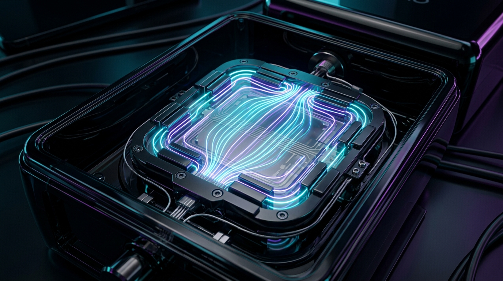

HEAR WHAT CANNOT BE MEASURED.
Enter the quantum acoustic chamber. Move your cursor to bend harmonic particle fields, toggle spatial frequencies, and experience planar-magnetic soundstage geometry.
Engineering the Outer Limits of Acoustic Geometry
Six proprietary hardware and DSP technologies converged into one uncompromising acoustic instrument.
70mm Beryllium Planar Drivers
Sub-micron vapor-deposited beryllium foil suspended in a dual-sided push-pull neodymium N54 magnetic circuit with near-instantaneous transient recovery.
Quantum Ear Calibration
Dual internal microphone probes compute your unique ear canal resonance curve in real-time, executing 100,000 FIR filter corrections per second.
Lossless AuroraLink™ 2.4G
Proprietary ultra-wideband RF streaming bit-perfect 192kHz/32-bit audio stream with under 0.8ms latency, completely eliminating compression artifacts.
Obsidian Glass Acoustic Damping
Triple-cavity Helmholtz resonance dampening chassis eliminates standing waves and harmonic back-reflections for an ultra-black acoustic floor.
Damascus Titanium Chassis
Aerospace-grade Grade-5 titanium headband paired with ventilated magnetic memory-protein cushions with integrated phase-change cooling gel.
Binaural Studio Emulation
Integrated gyroscopic 9-axis head-tracking renders a holographic 7.1.4 Dolby Atmos mixing environment directly inside your acoustic sphere.

Anatomy of a Sonic Singularity
Traditional dynamic drivers push sound from a central voice coil, creating cone distortion and modal breakup at high volumes. Aurora Signal’s Planar-Flux™ diaphragm drives the entire air column simultaneously across a symmetrical magnetic matrix.
Choose Your Acoustic Horizon
Every Aurora Signal tier includes precision calibration and access to the Quantum Spatial firmware engine.
Aurora Pulse
Audiophile grade planar drivers for serious mobile and desktop monitoring.
- 50mm Planar-Magnetic Drivers
- AuroraLink™ USB-C Dongle
- Standard Calibration App Preset
- 2-Year Manufacturer Warranty
- Bespoke Ear-Mold Scanner
- Balanced Vacuum-Tube DAC Dock
Aurora Signal Master
The ultimate studio instrument for mastering engineers, artists, and discerning purists.
- 70mm Beryllium Planar-Flux Drivers
- AuroraLink™ Base Dock & Headphone Stand
- Real-Time Quantum Ear-Canal DSP
- 9-Axis Gyro 7.1.4 Atmos Spatial Emulation
- 5-Year Studio Replacement Warranty
- Bespoke Damascus Inlay Engraving
Aurora Infinity Bespoke
Hand-assembled with custom artisanal materials and vacuum-tube analog amplification.
- Custom 3D-Scanned Ear-Molds
- Balanced Vacuum-Tube DAC Dock
- Damascus Titanium Laser Engraved
- Silver Litz Balanced Audio Cable
- Lifetime VIP Concierge & White Glove Replacement
Acoustic Masters on Aurora Signal
Frequently Asked Questions
Detailed insights into our driver architecture, wireless protocols, and global listening trials.
Transmit a Direct Signal
Request a listening booth reservation at our San Francisco Acoustic Laboratory or speak directly with our lead hardware engineers.